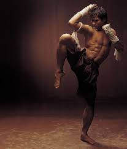

The true roots of Kickboxing can be found to date back 2000 years ago in Far East Asia, where Muay Thai Kickboxing was commonly practiced as a self-defense discipline. However it gradually became more of a sport over the years. Thai boxing soon became the most common and popular fighting sport in Asia.(columbia.edu)
When full contact karate (now kickboxing) first began as a sport in the US in the early seventies, the fighters of that time had to learn through a process of trial and error. The fighters all came from ranks of traditional karate or other traditional martial arts, and when they fought in professional full contact bouts certain shortcomings and defects became apparent. They discovered that they were not as fit or conditioned as they had thought and they struggled to fight 10 rounds in the professional ring. The full contact fighters also discovered to their dismay that their punches were not as effective in the ring as they had expected. (columbia.edu)
Kickboxing had started to gain in popularity all over the world, to the point where it had become both an internationally recognized sport and martial arts discipline. The dynamic modern version of kickboxing had arrived on the international sport circuit and was expanding and spreading all over the world.(columbia.edu)
